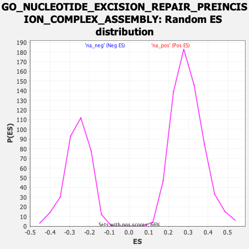

| | | Dataset | CK_basal |
| Phenotype | NoPhenotypeAvailable |
| Upregulated in class | na_neg |
| GeneSet | GO_NUCLEOTIDE_EXCISION_REPAIR_PREINCISION_COMPLEX_ASSEMBLY |
| Enrichment Score (ES) | -0.6124351 |
| Normalized Enrichment Score (NES) | -2.3475757 |
| Nominal p-value | 0.0 |
| FDR q-value | 0.010694288 |
| FWER p-Value | 0.024 |
Table: GSEA Results Summary
 Fig 1: Enrichment plot: GO_NUCLEOTIDE_EXCISION_REPAIR_PREINCISION_COMPLEX_ASSEMBLY
Fig 1: Enrichment plot: GO_NUCLEOTIDE_EXCISION_REPAIR_PREINCISION_COMPLEX_ASSEMBLY
Profile of the Running ES Score & Positions of GeneSet Members on the Rank Ordered List
| SYMBOL | RANK IN GENE LIST | RANK METRIC SCORE | RUNNING ES | CORE ENRICHMENT | | 1 | RPA1 | 3802 | 1.190 | -0.1491 | No |
| 2 | CUL4A | 8023 | 0.489 | -0.3467 | No |
| 3 | RPS27A | 9122 | 0.316 | -0.3908 | No |
| 4 | GTF2H3 | 9491 | 0.258 | -0.3997 | No |
| 5 | GTF2H5 | 10321 | 0.133 | -0.4371 | No |
| 6 | PARP1 | 10930 | 0.033 | -0.4670 | No |
| 7 | CUL4B | 11265 | -0.020 | -0.4834 | No |
| 8 | RPA2 | 11603 | -0.069 | -0.4980 | No |
| 9 | GTF2H1 | 12132 | -0.157 | -0.5191 | No |
| 10 | GTF2H4 | 12263 | -0.178 | -0.5189 | No |
| 11 | GTF2H2 | 12599 | -0.237 | -0.5269 | No |
| 12 | ERCC2 | 13732 | -0.432 | -0.5683 | No |
| 13 | XPC | 14331 | -0.539 | -0.5782 | No |
| 14 | RPA3 | 15000 | -0.675 | -0.5864 | Yes |
| 15 | XPA | 15196 | -0.715 | -0.5688 | Yes |
| 16 | RBX1 | 15255 | -0.726 | -0.5438 | Yes |
| 17 | DDB2 | 15456 | -0.767 | -0.5245 | Yes |
| 18 | ERCC5 | 16274 | -0.940 | -0.5301 | Yes |
| 19 | DDB1 | 16370 | -0.961 | -0.4979 | Yes |
| 20 | UBA52 | 16449 | -0.979 | -0.4641 | Yes |
| 21 | RAD23B | 18021 | -1.439 | -0.4892 | Yes |
| 22 | ERCC3 | 18140 | -1.490 | -0.4378 | Yes |
| 23 | CCNH | 18226 | -1.524 | -0.3833 | Yes |
| 24 | CDK7 | 18277 | -1.550 | -0.3261 | Yes |
| 25 | CHD1L | 18299 | -1.559 | -0.2670 | Yes |
| 26 | CETN2 | 19067 | -2.016 | -0.2286 | Yes |
| 27 | UBC | 19101 | -2.050 | -0.1512 | Yes |
| 28 | UBB | 19241 | -2.194 | -0.0736 | Yes |
| 29 | MNAT1 | 19294 | -2.284 | 0.0118 | Yes |
Table: GSEA details [plain text format]

Fig 2: GO_NUCLEOTIDE_EXCISION_REPAIR_PREINCISION_COMPLEX_ASSEMBLY: Random ES distribution
Gene set null distribution of ES for GO_NUCLEOTIDE_EXCISION_REPAIR_PREINCISION_COMPLEX_ASSEMBLY